DARPA Lift Challenge: „This competition was the catalyst"
Eine Woche in Dayton, Ohio: 76 Teams, 70 Wertungsversuche, unzählige Crashs, und am Ende gewinnt ausgerechnet die älteste Bauform der Branche. Programm-Manager Phillip „Donna" Smith nannte den Wettbewerb zum Abschluss einen Katalysator: Der Funke ist gezündet, die Innovation gehört jetzt den Teams.
Neuigkeiten · Wettbewerbe & Szene · Lesezeit ca. 8 Min · Stand: August 2026
Kurz gesagt
- Die DARPA Lift Challenge suchte ein unbemanntes Fluggerät unter 25 kg, das mindestens das Vierfache seines Eigengewichts als Nutzlast über einen 9,3-km-Kurs trägt. Zum Vergleich: Die beste Serien-Lastendrohne am Markt schafft etwa das 0,5-Fache.
- Gewonnen hat kein futuristischer Multikopter, sondern ein klassischer Elektro-Hubschrauber mit einem Hauptrotor: die „Katana" von AVIDrone. 13,3 kg Leergewicht, 51 kg Gusseisen als Fracht, Verhältnis 3,84:1.
- Die 4:1-Marke fiel in keinem gewerteten Lauf. Deshalb griff eine bittere Klausel: Alle Podiumsplätze bekamen nur die Hälfte des Preisgelds, der Sieger 1,25 statt 2,5 Millionen Dollar.
- Von 70 offiziellen Wertungsversuchen kamen nur 9 komplette Läufe von 5 Teams ins Ziel. Ein Team demonstrierte sogar 9,63:1, schaffte aber keinen einzigen gewerteten Lauf.
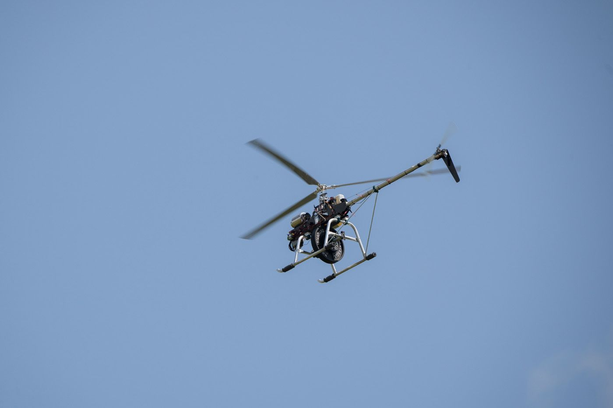
Worum es ging
Die DARPA, die Forschungsagentur des US-Verteidigungsministeriums, schreibt seit Jahrzehnten Preiswettbewerbe aus, wenn sie einen Technologiesprung erzwingen will. So brachte die Grand Challenge 2004 das autonome Fahren ins Rollen. Diesmal lautete die Aufgabe: Baut ein senkrecht startendes unbemanntes Fluggerät (VTOL), das mit allen Komponenten und Energiespeicher unter 55 Pfund (24,9 kg) wiegt und mindestens 110 Pfund (49,9 kg) Nutzlast über einen Kurs von 5 Nautischen Meilen (9,3 km) trägt. Wer das Vierfache seines Eigengewichts hebt, gewinnt bis zu 2,5 Millionen Dollar.
Wie hart diese Vorgabe ist, zeigt der Marktvergleich: Aktuelle Lasten-Multikopter tragen typischerweise etwa ihr eigenes Gewicht, DJIs großer FlyCart 100 liegt bei ungefähr 0,53:1. Gefordert war also grob der Faktor acht über der besten Serienhardware.
Die Nutzlast war dabei herrlich profan vorgeschrieben: handelsübliche Gusseisen-Hantelscheiben, alle an einem einzigen Punkt befestigt. Der Kurs: 12 Runden beladen (4 NM) in einem nur 18 m breiten und rund 320 m langen Flugkorridor, dann Ablegen der Fracht, dann 3 Runden leer. Flughöhe 150 Fuß mit 50 Fuß Toleranz, Zeitlimit 30 Minuten, zwei 90-Minuten-Flugfenster pro Team. Wer den Korridor um mehr als gut 10 Meter verließ, dessen Lauf war automatisch beendet.
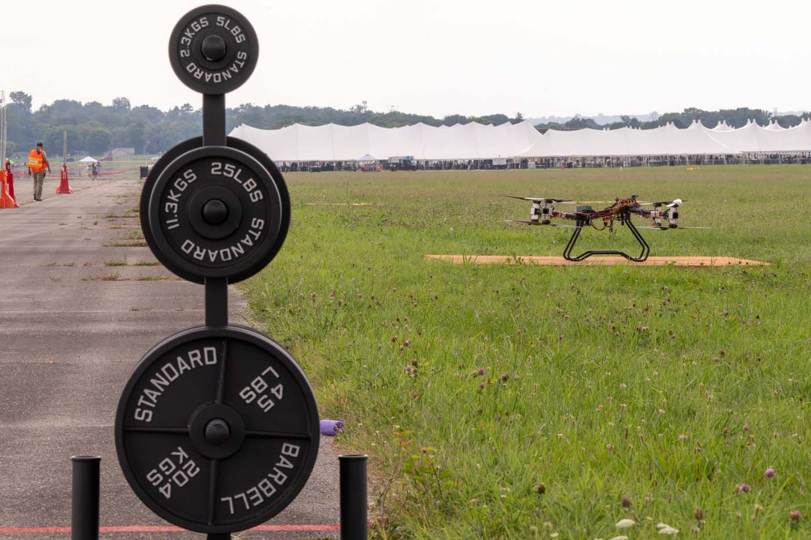
Der Trichter: von 489 auf 5
Die Zahlen erzählen die eigentliche Geschichte des Wettbewerbs. 489 Teams bewarben sich ab Januar 2026. 225 bestanden die technischen und regulatorischen Anforderungen, 132 wurden zum Finale eingeladen, 76 traten Anfang August in Dayton an, 62 kamen durch die Sicherheitsabnahme. Diese Teams flogen 70 offizielle Wertungsversuche. Und dann: Nur 9 vollständige, gewertete Läufe von genau 5 Teams. Alle anderen scheiterten an Crashs, leeren Akkus, dem Verlassen des Flugkorridors oder daran, die 50-kg-Mindestlast überhaupt in die Luft zu bekommen.
Programm-Manager Phillip „Donna" Smith brachte es so auf den Punkt: „All these teams... crashed. They failed. They picked themselves back up again and they tried again." Frei übersetzt: Alle diese Teams sind abgestürzt, alle sind gescheitert, und alle haben sich wieder aufgerappelt und es erneut versucht. Die DARPA selbst machte daraus keinen Hehl, sondern ein eigenes Highlight-Video: „Lift Happens: Best of DARPA Lift Challenge Crashes".
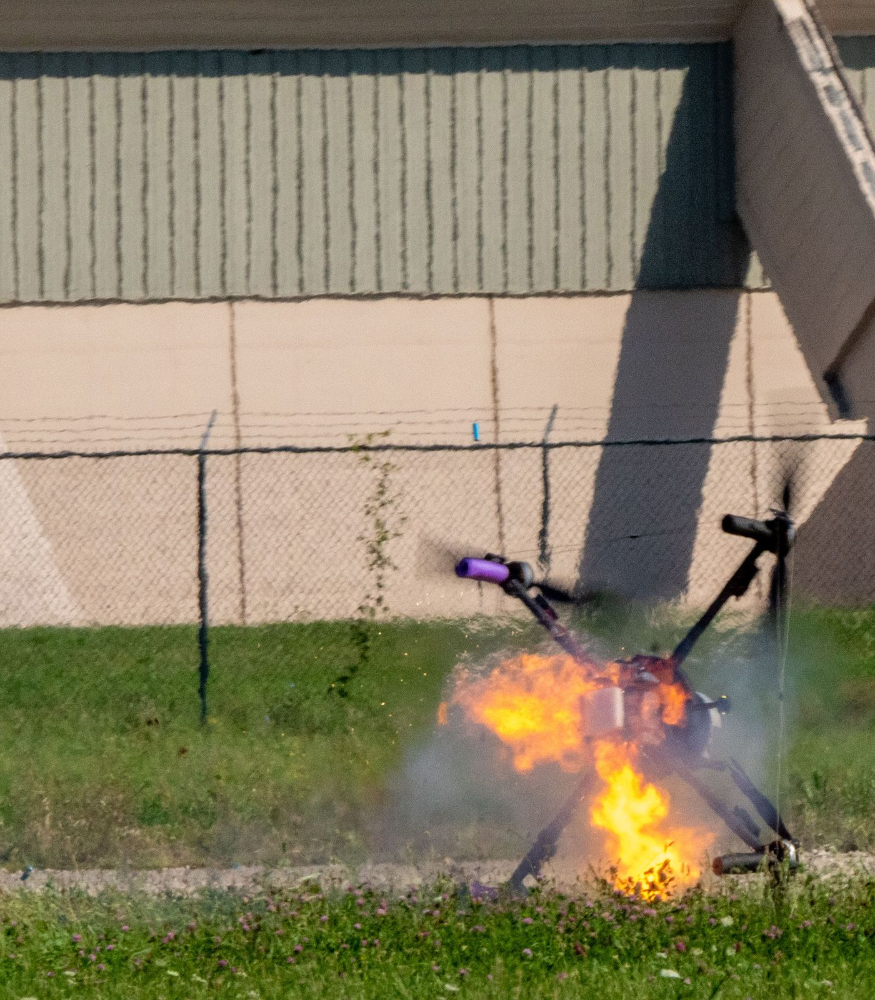
Die Woche in Dayton
Austragungsort war das National Museum of the US Air Force in Dayton, Ohio. Ab Sonntag, dem 2. August, liefen Check-in, Wiegen und Inspektion, ab Montag der tägliche Livestream. Am Dienstag startete das offizielle Leaderboard, am Mittwoch wurde der interne Bestwert bereits „pulverisiert", wie es im offiziellen Tagesrückblick hieß. Ab Donnerstag war das Gelände für das Publikum geöffnet, bei freiem Eintritt. Am Freitag beendeten Nachmittagsgewitter den Flugtag vorzeitig. Der Samstag brachte weitere Wertungsläufe, und der Sonntag das große Finale samt Preisverleihung.
Für die FPV-Szene gab es dabei ein vertrautes Gesicht: Joshua Bardwell, vielen aus unzähligen FPV-Tutorials bekannt, kommentierte den offiziellen Livestream als Analyst.
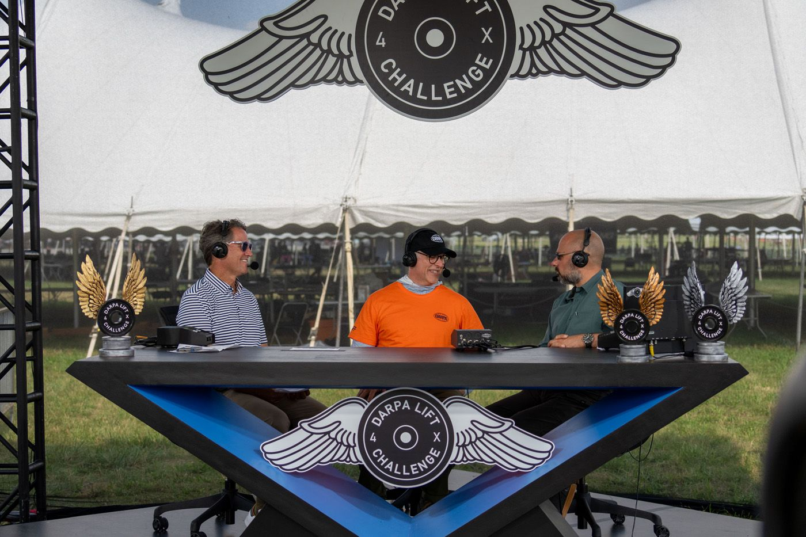
Die kompakten offiziellen Tagesrückblicke von DARPAtv (je wenige Minuten, keine stundenlangen Streams):
- Recap 4. August: das erste Leaderboard steht
- Recap 5. August: der Rekord fällt, ein neues Team übernimmt die Spitze
- Recap 6. August: Publikumsöffnung
- Recap 7. August: neuer Spitzenreiter, Gewitterabbruch
- Recap 8. August: die letzten Wertungsläufe
- Final-Recap 9. August: Finaltag und Preisverleihung
- The Innovators: Porträts der Menschen hinter den Maschinen
Der Finaltag: die 4:1-Angriffe
Am Sonntag wurde es dramatisch. Vier Teams traten mit Konfigurationen an, die rechnerisch 4,1:1 oder mehr hergaben. Es hätte der Moment werden können, in dem die Luftfahrtgeschichte ein neues Kapitel bekommt. Stattdessen: Keines der vier kam durch. Einem Team ging nach drei von fünf Meilen schlicht der Akku leer. Ein anderes zerlegte beim Versuch mit einer 6,11:1-Konfiguration sein letztes verbliebenes Fluggerät. Smith später: „We chose the target because we believed it might be possible... Even though we didn't hit it in an official score, we saw the path at this competition." Das Ziel sei bewusst so gewählt worden, dass es gerade eben möglich sein könnte, und auch ohne offiziellen 4:1-Lauf habe die Woche den Weg dorthin gezeigt.
Der Sieger: Technik von 1940, perfektioniert
Und dann die Pointe, über die die Szene seit Tagen diskutiert: Ganz oben stand am Ende kein exotisches Konzept, sondern die „Katana" von AVIDrone, ein batterieelektrischer Hubschrauber in klassischer Bauweise mit einem großen Hauptrotor und Heckausleger. Also exakt die Konfiguration, die Serienhubschrauber seit den 1940er-Jahren definiert. 13,3 kg Leergewicht, 51 kg Hantelscheiben, Kurszeit 19:17 Minuten bei 30 Minuten Limit, gewertetes Verhältnis 3,84:1.
Warum schlägt der alte Heli die Multikopter? Die Physik ist unbestechlich: Entscheidend ist die Flächenbelastung des Rotors (disk loading), also wie viel Gewicht jeder Quadratmeter Rotorkreisfläche stemmen muss. Ein einzelner großer Rotor beschleunigt sehr viel Luft relativ langsam und verliert dabei weniger Leistung pro Kilogramm Auftrieb. Viele kleine Propeller beschleunigen wenig Luft sehr schnell, und genau das kostet Wirkungsgrad. Wenn allein das Verhältnis von Nutzlast zu Gewicht zählt, gewinnt die große Rotorscheibe. Wie derselbe Zusammenhang am eigenen Copter aussieht, steht in unserem Ratgeber Wo der Schub herkommt.
Für Komponenten-Nerds interessant: Die Katana flog mit Akku-Modulen von Titan Batteries, Custom-Motoren und Reglern von Scorpion Power System (in der RC-Heli-Szene ein alter Bekannter), Carbon-Rotorblättern von Falcon Propeller und GNSS-Antennen von Calian. Plattform, Antriebsstrang-Auslegung und Flugsteuerung entwickelte das Team selbst.
Eine Randnotiz zur Einordnung: Die DARPA führt das Sieger-Team als „AVIDrone, Inc." aus Columbia, Maryland; kanadische Medien feiern zugleich den Tandem-Rotor-Hersteller Avidrone Aerospace aus der Region Waterloo, Ontario, als Sieger. Wie die beiden genau zusammenhängen, ist öffentlich nicht dokumentiert.
Das Podium und die halbierten Schecks
| Platz | Team | Konzept | Verhältnis | Preisgeld |
|---|---|---|---|---|
| 1 | AVIDrone „Katana" | Elektro-Heli, ein Hauptrotor | 3,84:1 | 1.250.000 $ |
| 2 | MTech Operations | Multikopter (14,5 kg Gerät, 53 kg Last) | 3,64:1 | 750.000 $ |
| 3 | Xtreme Aerial Concepts | Heli am 25-kg-Limit, 86 kg Last | 3,45:1 | 500.000 $ |
Der Haken: In den Regeln stand von Anfang an, dass unterhalb von 4:1 nur die Hälfte des jeweiligen Preisgelds ausgezahlt wird. Genau das trat ein. Von 6,5 Millionen Dollar Preistopf wurden 4 Millionen ausgeschüttet. Dahinter platzierten sich H-Squared aus Boston (2,96:1) und MacGyver aus Baltimore (2,51:1) als einzige weitere Teams mit gewerteten Läufen.
Die eigentliche Sensation flog außer Wertung
Die vielleicht wichtigste Zahl der Woche steht gar nicht im offiziellen Klassement. Das Team DefendTex hängte die Motoren seines Fluggeräts an Seile statt an eine starre Struktur und sparte damit fast das gesamte Strukturgewicht ein: Ein Gerät von nur 12 Pfund (5,4 kg) hob 112 Pfund (50,8 kg). Das ist ein demonstriertes Verhältnis von 9,63:1, mehr als das Doppelte des eigentlichen Wettbewerbsziels. Einen vollständigen gewerteten Lauf schaffte das Konzept allerdings nie. Die DARPA zeichnete es dennoch mit dem 500.000-Dollar-Preis „Most Promising Technology" aus.
Zwei weitere Sonderpreise über je 500.000 Dollar gingen an das Autonomous-Micro-Air-Vehicle-Team der University of Maryland (ein Dreifach-Rotor, der nach dem Start in effizienten Propellerflug übergeht) und an die Portal Aircraft Company aus Texas, deren Turbinenabgase die Rotoren direkt antreiben, ganz ohne Antriebswellen (Blattspitzenantrieb, Fachwort: Tip Jet).
Gescheitert, zurückgezogen, weitergebaut
Zum vollständigen Bild gehören auch die anderen Geschichten der Woche. Der eVTOL-Entwickler Jetoptera zog sein „Project Pegasus" schon Wochen vor dem Finale zurück und begründete das mit späten Regeländerungen, etwa der niedrigen Flughöhendeckelung und dem engen Rundkurs. Das Team Burl Aerospace stürzte aus rund 30 Metern ab und stand nach einer Reparatur noch am selben Tag wieder auf der Startlinie. Und unter den 76 Teams fanden sich neben Startups und Universitätsteams (darunter Penn State, Virginia Tech, Maryland und ein Zwölf-Rotor-Koloss der University of Nevada) auch Solo-Bastler, Highschool-Teams und ein FPV-YouTuber, dessen Baureihe zur Challenge über 400.000 Aufrufe sammelte. Genau diese Mischung, vom Garagenprojekt bis zur Uni-Maschine, macht den Wettbewerb für unsere Szene so nahbar.
Was davon bleibt
Den Satz, der dieser Geschichte ihren Titel gibt, sagte Smith bei der Preisverleihung: „The true value of this Challenge isn't measured in dollars; it's measured in the ideas that became prototypes, the prototypes that became aircraft, and the boundaries that you pushed every time you took to the flightline. This competition was the catalyst, but the innovation it sparked is now yours to unleash." Der wahre Wert des Wettbewerbs bemesse sich nicht in Dollar, sondern in Ideen, die zu Prototypen wurden, und Prototypen, die zu Fluggeräten wurden; der Wettbewerb sei der Katalysator gewesen, die entfachte Innovation gehöre nun den Teams.
DARPA-Direktor Stephen Winchell fasste die Woche so zusammen: „The lifting capabilities demonstrated already exceed those available in the current market." Die gezeigten Hebeleistungen übertreffen schon jetzt alles, was am Markt verfügbar ist. Die Agentur legt Anschlussprogramme zur Kommerzialisierung der Subsysteme auf und vermittelt den Teams Investoren. Die Siegerfluggeräte bekommen einen Platz als Dauerausstellung im National Museum of the US Air Force.
Für uns als Entwickler ist die Lektion der Woche eine doppelte. Erstens: Der Wirkungsgrad wohnt in der großen Rotorscheibe, nicht in der Anzahl der Motoren. Zweitens: Zwischen einem Prototyp, der einmal spektakulär hebt, und einem System, das einen 9,3-km-Kurs zuverlässig durchfliegt, liegt genau die Ingenieursarbeit, an der in Dayton 71 von 76 Teams gescheitert sind. Beides gilt im Großen wie im Kleinen, auch bei jedem Copter, der bei uns auf dem Tisch liegt.
➜ Persönliche Beratung zu deinem Build anfragen
Bildergalerie: die Fluggeräte von Dayton
Vom klassischen Heli über Seil- und Fachwerk-Konstruktionen bis zum Zwölf-Rotor-Koloss: ein Streifzug durch die Konzepte der Finalwoche (seitlich scrollen).
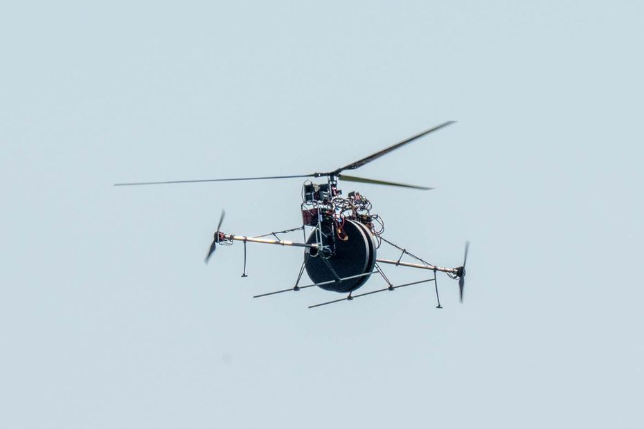
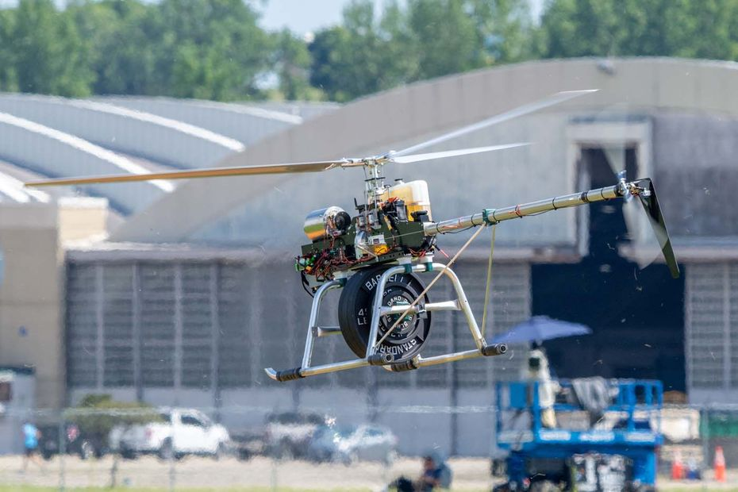
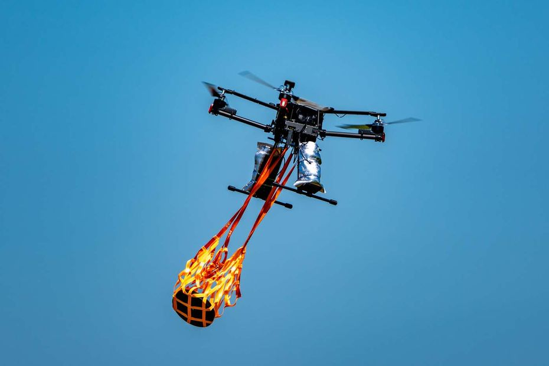
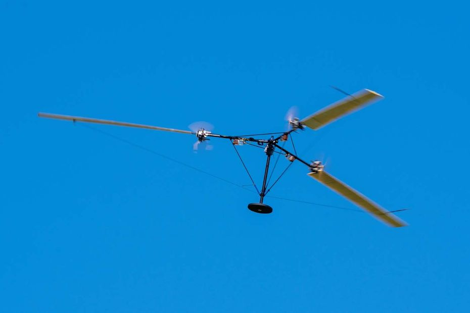
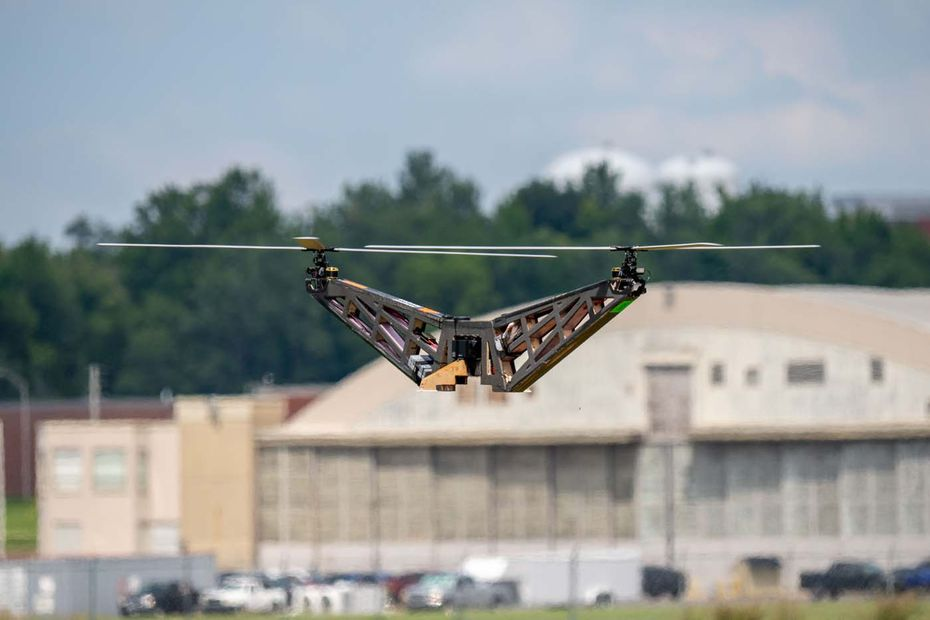
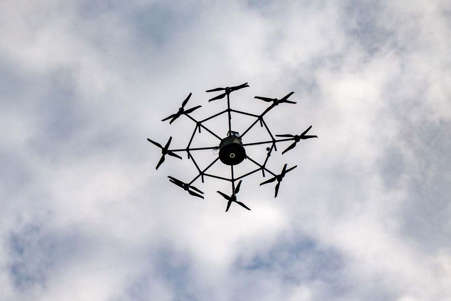
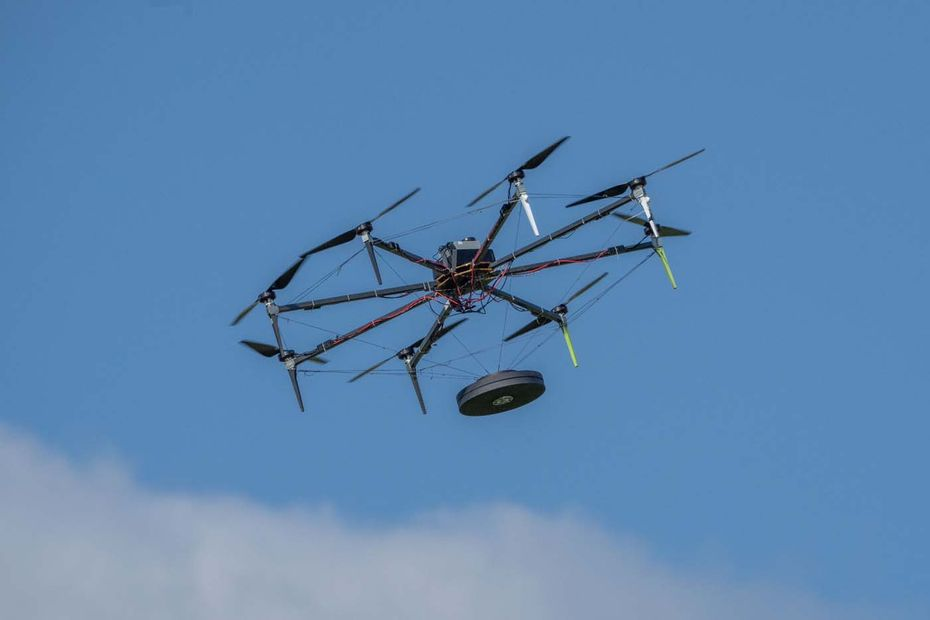
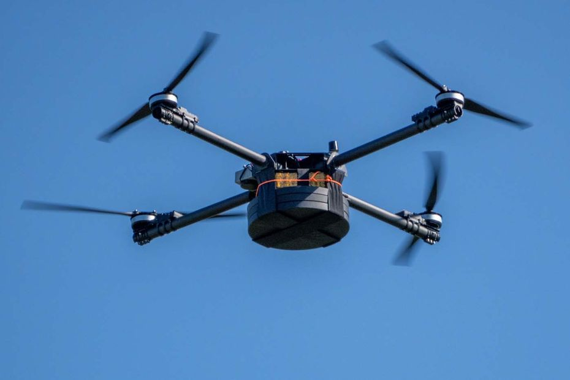
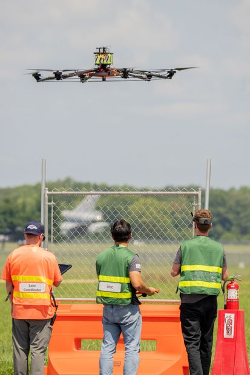
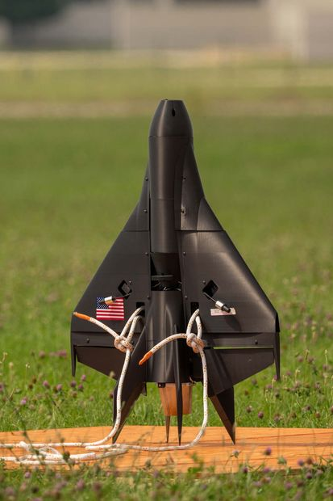
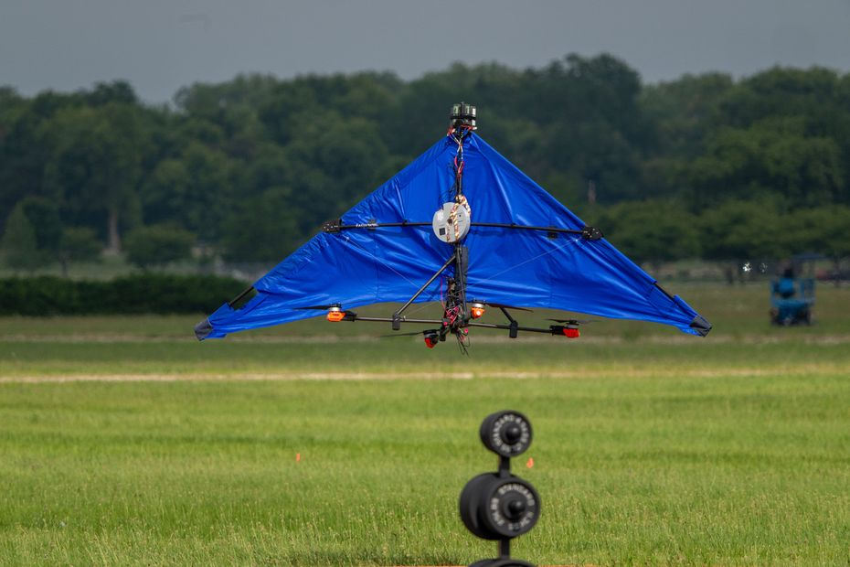
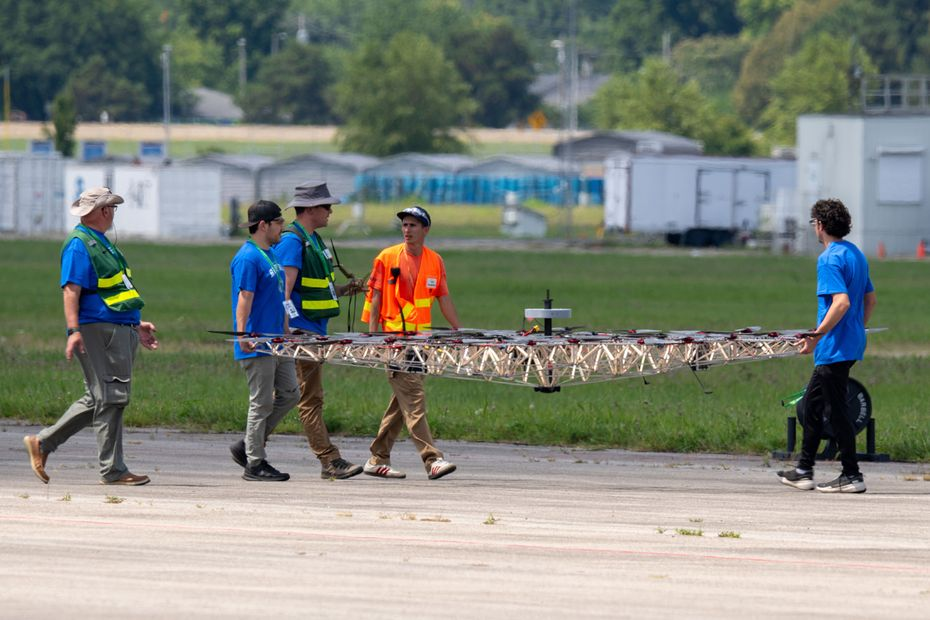
Alle Fotos: DARPA | Paul Flacks, aus dem offiziellen Pressebild-Kit zur Lift Challenge. Verwendung zu informierenden Zwecken gemäß DARPA Usage Policy; die DARPA ist mit Draco Labs nicht verbunden und unterstützt uns nicht.
Videos: die Challenge aus Sicht der Teams
Viele Teilnehmer haben ihren Weg nach Dayton auf eigenen Kanälen dokumentiert, vom ersten Rahmen bis zum Wertungslauf. Diese neun Videos geben zusammen ein gutes Bild der Woche: sechs von Teilnehmern selbst, drei von Kanälen, die den Wettbewerb begleitet haben. Alle Player laden erst beim Klick.
Alle Videos sind über die offizielle YouTube-Einbettung eingebunden und laufen auf den Servern von YouTube; die Rechte liegen bei den jeweiligen Kanälen. Die Kanäle und Teams sind mit Draco Labs nicht verbunden. Wie die Einbettung datenschutzrechtlich funktioniert, steht in unserer Datenschutzerklärung.
Alle Zahlen und Zitate stammen aus den unten verlinkten Quellen, Stand 14.08.2026. Alle Angaben ohne Gewähr.
Quellenangaben
- DARPA: Lift Challenge (Programmseite)
- DARPA: Lift Challenge, About/Regeln
- DARPA: Lift Challenge Results (Awards-Meldung, 09.08.2026)
- DARPA: Meet the Lift Challenge Teams (09.07.2026)
- DroneXL: DARPA Pays Half As A Conventional Helicopter Wins The Lift Challenge At 3.84:1 (10.08.2026)
- DroneXL: Regeln und Preisstruktur (04.08.2026)
- Defence Blog: Surprisingly old-fashioned winner
- Defence Blog: Jetoptera quits before finals (05.08.2026)
- Dayton247now: Lokalbericht mit Smith-Zitaten
- UASweekly: Aviation Records (13.08.2026)
- University of Nevada, Reno: Team TITAN
- DARPA: offizielles Pressebild-Kit (Credit: DARPA | Paul Flacks)
- DARPAtv: Lift-Challenge-Playlist
Änderungshistorie
- 14.08.2026 · Veröffentlichung in der neuen Rubrik Neuigkeiten: indexierbar, Startseiten-Kachel, sitemap, Cross-Link zum Motoren-Ratgeber
- 14.08.2026 · Video-Raster mit neun YouTube-Videos ergänzt: sechs von Teilnehmer-Kanälen, drei von begleitenden Kanälen
- 14.08.2026 · Offizielle DARPA-Pressefotos ergänzt: vier Bilder im Text und Galerie der Fluggeräte, Credit DARPA | Paul Flacks
- 14.08.2026 · Erstveröffentlichung